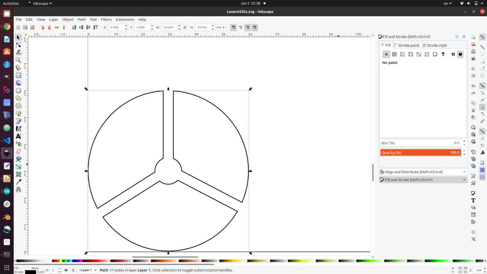
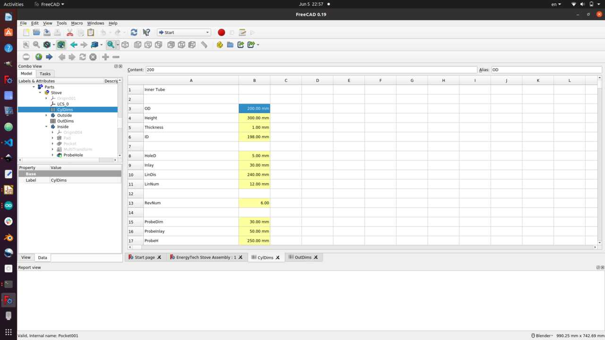

This week I worked on defining my final project idea and started to get used to the documentation process. The learning objectives for the assignment this week are:
a. Evaluate and select 2D and 3D software
b. Demonstrate and describe processes used in modelling with 2D and 3D software
c. Model experimental objects/part of a possible project in 2D and 3D software
d. Show how I did it with words/images/screenshots
e. Include my original design files
a. Evaluate and select 2D and 3D software
Since I am working to build out a node in Togo, Africa, and cost constraints with regards to sofware are an issue faced by Africans. I will opt to work with the open source softwares. As a result, I elected to use the following softwares:
-
2D Modelling - Inkscape
-
3D Modelling - FreeCAD
b. Demonstrate and select 2D and 3D software
For my project I have elected to create a stove that generates electricity for cell phone appliances and other low voltage DC electronics. An expoded view of the final 3D model is shown below

To create this model various computer aided design skills were needed both in Inkscape, and in FreeCAD. In this section i will link to the video tutorials I used to learn each of these skills. I will also embed some of the videos below. Here is a list of the skills that were required
2D Inkscape skills
Below is a list of the Inkscape skills that were used to make the model for my project including links to the Youtube videos that were used for each skill. For further inkscape tutorials you can also visi ther tutorial webpage here: (https://inkscape.org/learn/tutorials/)
- (Intro to inscape
- (Shape tools and option)
- (Groups, levels, and object selection)
- (Difference, union, intersection, combine)
- (Importing a logo/image and converting to svg)
- (Saving svg to import into FreeCad)
3D FreeCAD skills
Below is a list of the FreeCAD Skills that were used to make the model for my project including links to the YouTube videos that were used. The workbench that was required to use each feature is also identified. For further FreeCAD tutorials you can also visit their tutorial webpage here: (https://wiki.freecadweb.org/Tutorials)
Sketcher
- (Making a sketch and constraining it)
- (Creating a datum plane)
- (Parameterising a sketch - includes Spreadsheet Workbench discussion)
- (Creating a shapestring)
- (Making a sketch and transforming it onto a surface - includes Surface Workbench)
Part Design Workbench
Part Workbench
- (Make a union between two bodies)
- Make a cut between two bodies (same link as above)
Draft Workbench
- (Linear array)
- Polar array (same as above)
Sheetmetal workbench
- (Bend)
- Flatten (same as above)
Surface Workbench
Assembly Workbench
Exporting and Rendering
- (Meshing and exporting your CAD file as a .OBJ for 3D printing or Rendering)
- (Rendering Your Assembly using Blender)
- (Rendering using CadRays)
c. Model experimental objects/part of a possible project in 2D and 3D software
In this section I will provide a video of the final 3D model with a walk through of all the parts and features. See the video below for details
d. Show how I did it with words/images/screenshots
In this section I will show in detail how I constructed each body and sketch using FreeCAD or Inkscape as well as how I was able to parameterise the design.
Inkscape walkthrough
In these videos I demonstrate the work that was done on Inkscape to make the louvre slits and also how to I imported the sketch into FreeCAD. Note that the SVG file is included below. You can also see a screenshot. The videos require too much space therefore they are linked to youtube.
Here is a photo of the inkscape file
You can see on the screen that I used a circle and then used the subtract feature of the three squares. Lastly, I merged all the objects into one path.
FreeCAD Walkthrough
In these videos I perform a walkthrough of the FreeCAD functions and methods used to create my 3D models. I also exported the results into an STL format with the files shown below. Again, the videos were very large and as a result they had to be posted on YouTube.
Below are photos of the STL versions of what was created. Note many functions in FreeCAD were used such as pad, pocket, loft, sweep, rotate, and more.
Parameterisation walkthrough
In this section I discuss how to parametrize the file and the parameterization that was done for this assembly.
As is discussed in the video (file too large to upload) I use the spreadsheet function to determine the dimensions and then label all dimensions as a function of those defined in the spreadsheet. This way you can see and change any parameter to reconfigure the entire assembly.
In the image below I demonstrate how the spreadsheet looks in FreeCAD and illustrated the variables that were used.
{kind=link}